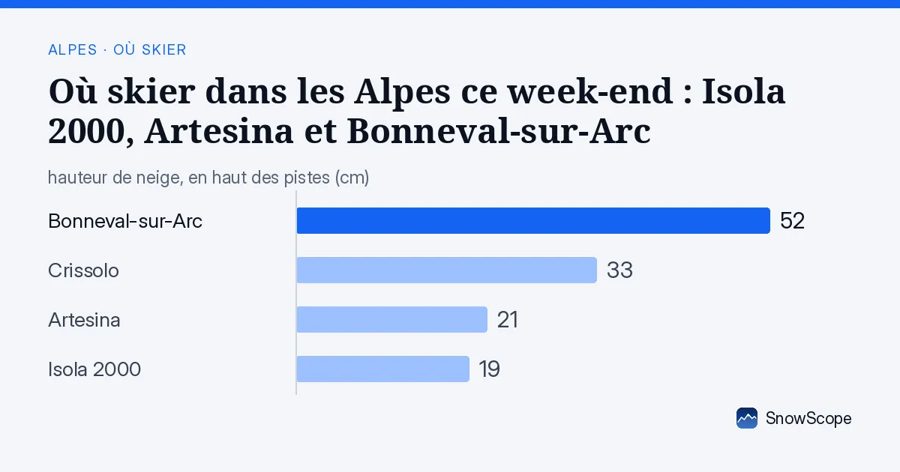

Où skier dans les Alpes ce week-end : Isola 2000, Artesina et Bonneval-sur-Arc
Ce week-end dans les Alpes, Bonneval-sur-Arc offre la neige la plus abondante avec 52 cm sur ses pentes supérieures, soutenu par une semaine de chutes importantes. Isola 2000 et Artesina ont reçu des totaux similaires mais conservent moins de neige aujourd'hui ; votre choix dépend de la hauteur à laquelle vous voulez monter et de l'orientation qui vous attire.
Consultez les prévisions neige en temps réel pour Isola 2000 sur l'application SnowScopeHauteurs de neige, alertes poudreuse et carte 3D, gratuitement.
Trois stations, trois profils de neige
Bonneval-sur-Arc se distingue avec 52 cm au-dessus de 2 900 m. La mi-montagne (2 371 m) a 6 cm, la base seulement 1 cm—le tableau typique du début de saison avec la neige accrochée à l'altitude.
Isola 2000 a reçu 62 cm identiques en 72 heures mais affiche 19 cm en altitude aujourd'hui. Le sommet (2 601 m) SnowScope montre 17 cm ; le niveau intermédiaire (2 214 m) chute à 15 cm. Artesina a aussi reçu 61 cm en trois jours mais ne conserve que 21 cm au-dessus de 2 091 m, avec pratiquement rien à mi-montagne ou à la base.
| Station | Hauteur de neige | Neige fraîche, 72 h | Attendu, jours suivants | Sommet |
|---|---|---|---|---|
| Isola 2000 | 19 cm | 62 cm | 3 cm | 2 601 m |
| Artesina | 21 cm | 61 cm | 1 cm | 2 091 m |
| Bonneval-sur-Arc | 52 cm | 32 cm | 7 cm | 2 948 m |
| Crissolo | 33 cm | 46 cm | 4 cm | 2 308 m |

Pourquoi l'altitude compte ce week-end
La neige de début novembre est fragile. À Isola 2000, le zéro thermique samedi culmine à 2 270 m, puis monte à 2 510 m dimanche—ce qui signifie que les pentes basses se transforment en porridge tandis que le sommet reste ferme. Crissolo affiche un pattern similaire, avec son niveau intermédiaire (1 922 m) plus chaud que son pic (2 308 m) sur les deux jours.
La plus grande altitude de Bonneval-sur-Arc (sommet à 2 948 m) lui donne un avantage : même dimanche, quand les zéros thermiques remontent dans toute la région, le sommet reste bien au-dessus du dégel. Si vous avez l'endurance et les jambes pour 2 900 m, Bonneval-sur-Arc est votre meilleur pari pour une neige gelée et skiable jusqu'à dimanche.

Orientation et exposition : où regarder
Les pentes orientées nord sont vos meilleures amies ce week-end. Le terrain exposé sud perd sa neige le plus rapidement au soleil, en particulier aux altitudes intermédiaires où le manteau nouveau est mince. Dans les trois stations, cherchez les versants ombragés des vallées et les crêtes orientées nord.
Les rochers et l'herbe se cachent juste sous la neige mince du début de saison. Restez sur les pistes ouvertes et damées plutôt que de vous aventurer dans les couloirs ou les pentes boisées où la base peut être exposée. Un seul jour de soleil en novembre peut transformer un rocher caché en menace.
Ce que le week-end apporte
Samedi et dimanche sont calmes : pratiquement pas de neige fraîche prévue. Isola 2000 peut voir des traces samedi, Bonneval-sur-Arc 1 cm. Lundi le tableau change légèrement, avec Bonneval-sur-Arc prévue de recevoir 6 cm—mais le week-end lui-même concerne l'exploitation de la base existante.
Les prévisions peuvent changer dans les jours à venir. Vérifiez la carte SnowScope à nouveau vendredi soir avant de partir, en particulier si vous vous rendez dans une station basse où un petit changement du zéro thermique affecte si les pentes restent skies ou se transforment en slush.
Avant de partir
Toute neige abondante ne signifie pas remontées ouvertes. Les stations décident indépendamment quand ouvrir ; consultez leurs sites internet pour confirmer les horaires d'exploitation. Nombreuses ferment en semaine en novembre et ouvrent seulement vendredi à dimanche.
Si vous prévoyez de quitter la piste—randonnée, ski de rando ou descentes hors-piste—consultez d'abord le bulletin officiel d'avalanche de votre secteur. Les coulées de début de saison sont rares mais possibles après une grosse chute.
Conseils aux skieurs
- Visez des altitudes au-dessus de 2 400 m ce week-end : les zéros thermiques remontent, et les pentes basses se ramollissent en fin d'après-midi même samedi.
- Privilégiez les pentes orientées nord et les vallées ombragées : elles conservent la neige le plus longtemps et restent fermes plus longtemps à mesure que le soleil monte chaque jour.
- La neige de début de saison est mince. Les rochers et l'herbe se cachent juste sous la surface sur les terrains non damés. Skiez les pistes marquées et damées jusqu'à ce que la base s'épaississe fin novembre.
- Vérifiez le site internet de la station avant de partir : nombreuses stations alpines n'ouvrent que les week-ends début novembre.
- Recevez une alerte poudre dans l'app SnowScope pour savoir quand l'une de ces stations reçoit de la neige fraîche.
À propos de ces chiffres
Les hauteurs de neige des stations sont la neige la plus épaisse sur le haut du domaine à la date indiquée ; ce sont des estimations pour une zone, pas une mesure en un point. Les prévisions peuvent changer. Consultez toujours le bulletin d'avalanche officiel avant le hors-piste.
Bulletins d'avalanche officiels: EAWS (Alps)
Citer ce bulletin
Pour la recherche, l'enseignement ou la presse : chiffres et graphiques réutilisables librement sous CC BY 4.0 avec cette citation.
SnowScope (2026), Où skier dans les Alpes ce week-end : Isola 2000, Artesina et Bonneval-sur-Arc, https://snowscope.app/blog/fr/2026/11/alps-where-to-ski-this-weekend-6-november-2026.html, consulté le 2026-11-06
SnowScope (Atlas Labs). (2026, November 6). Où skier dans les Alpes ce week-end : Isola 2000, Artesina et Bonneval-sur-Arc. SnowScope snow reports. https://snowscope.app/blog/fr/2026/11/alps-where-to-ski-this-weekend-6-november-2026.html
BibTeX
@misc{snowscope2026alpswheretoskithisweeken,
author = {{SnowScope (Atlas Labs)}},
title = {Où skier dans les Alpes ce week-end : Isola 2000, Artesina et Bonneval-sur-Arc},
year = {2026},
month = nov,
howpublished = {\url{https://snowscope.app/blog/fr/2026/11/alps-where-to-ski-this-weekend-6-november-2026.html}},
note = {Published 2026-11-06 12:45 UTC; accessed 2026-11-06}
}· CC BY 4.0 · Méthodes, données et outils →
Isola 2000 : neige et température selon l'altitude, cet hiver vs l'hiver dernier (outils) →
Suivre Isola 2000
Gratuit : un message quand la neige arrive, et la météo chaque matin.